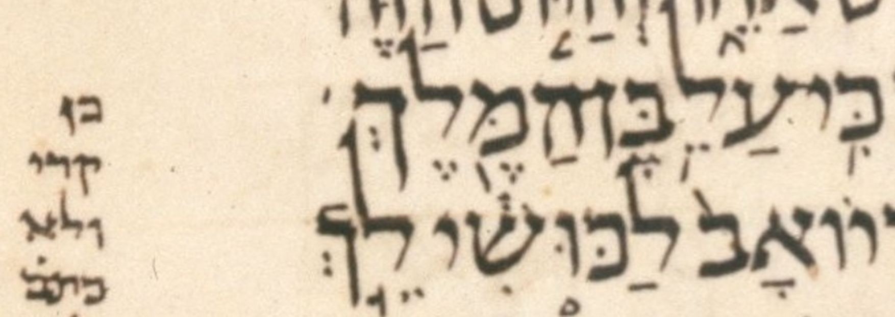
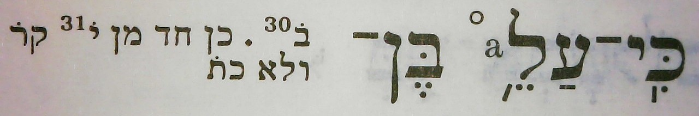

LC

BHS

AC
| n | 20 |
| citation:book | 2Sam |
| citation:c | 18 |
| citation:v | 20 |
| citation:position | 19 |
| author:name | Ben Denckla |
| author:mail | bdenckla@alum.mit.edu |
| author:confirmed | true |
| description | Note that while creating the pointed qere, the transcriber added a dagesh to kaf |
| lc:folio | Folio_179A |
| lc:column | 3 |
| lc:line | 10 |
| lc:credit | Credit: Sefaria.org. |
| reftext | כֵּ֥ן |
| refuni | kaf dagesh tsere merkha final-nun |
| changetext | כֵּ֥ן |
| changeuni | kaf dagesh tsere merkha final-nun |
| notes:note | The qere at issue is part of the compound כִּֽי־עַל־כֵּ֥ן. The other parts of this compound are not part of this qere. |
| notes:note-2 | The manuscript’s pointed ketiv (MPK) is אֵ֣ׄאׄ. (We use אׄ (א with an extraordinary upper dot) to hold marks not associated with a parent letter.) |
| notes:note-3 | The MPK has no letter to carry a dagesh for the qere’s כ. The MPK (points on no letters) is tsere and merkha. |
| notes:note-4 | Dotan notes that strictly speaking, the implied qere and the atom preceding it form the phrase עַל כֵ֥ן. (This implies the more complete phrase כִּֽי־עַל כֵ֥ן.) I do not take him to find עַל כֵ֥ן notable for the issue at hand: the lack of a dagesh in the כ of the implied qere כֵ֥ן. I take him to find the phrase עַל כֵ֥ן notable only because its atoms are, unexpectedly, separated merely by a space rather than a maqaf. |
| notes:note-5 | Note that, contrary to UXLC, עַל is a normal atom, i.e. it is not part of a ketiv/qere. It is abnormal only in that it precedes a qere velo ketiv. I.e. UXLC has <k>על</k><q>עַל־</q> where I think it should merely have <w>עַל־</w>. |
| notes:note-6 | The manuscript’s lack of a trailing maqaf on עַל is the subject of a currently-pending change proposal, 2024.04.01/2024.01.18-2. |
| transnotes:transnote:action | Add |
| transnotes:transnote:type | a |
| transnotes:transnote:beforetext | כֵּ֥ |
| status | Pending |
| type | NoTextChange |